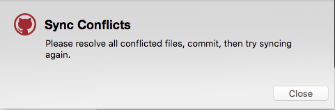
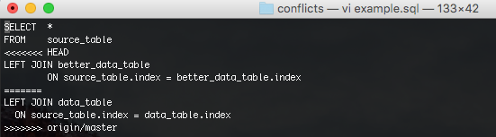
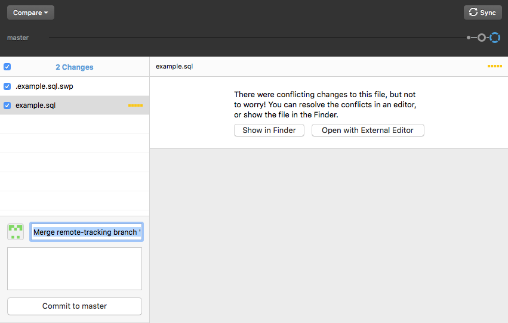
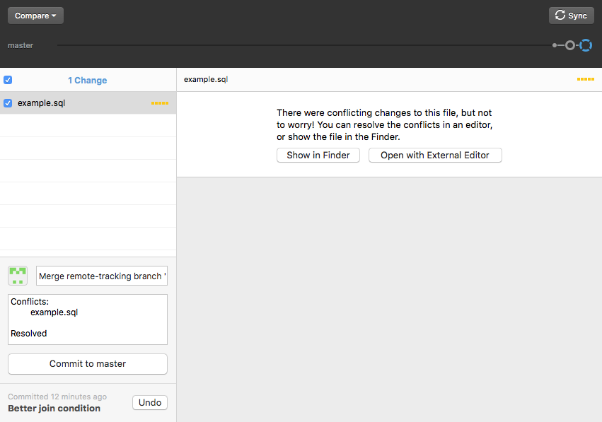

Merge Conflicts
What happens if you and your partner try to edit the same part of the same file at the same time? This creates a problem, because there’s no longer a single authoritative version of the file. This situation is known as a “merge conflict”. Generally merge conflicts are avoided by making sure that collaborators are all working on different files, but if you do end up hitting a conflict Git will alert you, mark the regions of the file where the conflict occurs in that file, and then let you edit that file to resolve the conflict.
Let’s walk through a conflict here... In this example repository, I have a short SQL script with the following lines:
SELECT *
FROM source_table
Then my collaborator added a join condition to the SQL script. However, I begin editing without pulling his change down first.
SELECT *
FROM source_table
LEFT JOIN data_table
ON source_table.index = data_table.index
His code is above. My code is below:
SELECT *
FROM source_table
LEFT JOIN better_data_table
ON source_table.index = better_data_table.index
Look what happens when I try to send my commit up...

Our file has now been changed! Take a look at the change git made - it has the original script and BOTH our changes:

Git is also prompting me to do a new commit to resolve the conflict. It is saying “I can’t reconcile these differences on my own, show me how and make it part of the history of this repository so others can see how it was resolved in the future.”

As you saw above the code now looks like this:
SELECT *
FROM source_table
<<<<<<< HEAD
LEFT JOIN better_data_table
ON source_table.index = better_data_table.index
=======
LEFT JOIN data_table
ON source_table.index = data_table.index
>>>>>>> origin/master
Let’s break this down. The portion that says “<<<<<<< HEAD” tells you the beginning of the conflict. The portion marked HEAD is the change on your local computer. The portion marked “>>>>>>> origin/master” is the end of the conflict. The origin/master part is the change on the remote repository. Now that we understand what’s going on, let’s resolve it; We have to manage this on our computer now.
Open the conflicted file in any of your text editors. The way Github handles conflicts is it spits both versions back at you and tells you to figure it out. Let’s just say I actually want to do both of these joins. So first, I need to erase the line with HEAD, the === divider, and origin/master line. Then I’ll edit it so it looks like the following:
SELECT *
FROM source_table
LEFT JOIN better_data_table
ON source_table.index = better_data_table.index
LEFT JOIN data_table
ON source_table.index = data_table.index
I save and hit the commit button (make sure to check the box next to the file).

Now you can sync all your changes to resolve the conflict.
Notice in the log, that it now has three commits.
- My collaborator’s commit
- My commit
- Merge remote-tracking branch... etc. etc.
This means that on top of the original change by my collaborator and
my added commit, I now have a commit of the merged state. Phew!
Problem solved. Hopefully you will make sure to sync beforehand to
reduce the chance of running into this problem. But whenever you do,
now you know how to handle it.
Note that if you try to issue a Pull Request in GitHub and there is a
merge conflict, GitHub will force you to resolve that conflict on your
local machine (in the above manner) and sync the changes before
allowing you to merge.
Advanced Workflows
We’ve now discussed several different ways of working with
others using Git and GitHub. We’ve also discussed the pain that can
happen when multiple people work collaboratively on the same parts of
a project. How you avoid this pain is up to you and your team, but
there are several well-established conventions designed to maximize
efficiency and minimize merge conflicts.
Atlassian provides an excellent overview
of several of these workflows, and we highly recommend reading it
carefully. (Note that it uses command line Git for its examples, which
we will cover in the next sections.)
Tip - Issues
When you are collaborating on a project with someone, you sometimes
come across problems that need to be fixed. To help you keep track of
these problems, each GitHub repository has a section called
Issues. All questions and problems posted to the repo’s issues will be
recorded for future reference, and GitHub has several features
designed around issues to make it easy to use them to manage projects. Issues
can be additionally useful for reducing merge conflicts – issues can
be assigned to individuals, and once assigned it’s easy to see what
others are working on and avoid overlap.
 Git Foundations
1.0
Git Foundations
1.0